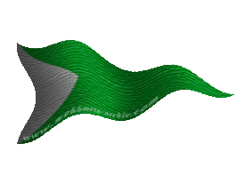
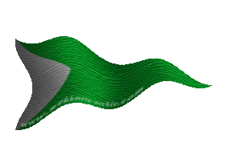

|

|
Das schwarze Brett
|
|
| Übersicht,
Anschläge und Stammtisch (RPG) |
|
Suche
|
| Sereila (RIP) |
Seit gegrüßt werte Scherbenbewohner.
Ich bin erst vor kurzem hier in diesen Ländereien eingetroffen und habe zur Zeit mein Lager bei der Stadt Lager Nord aufgeschlagen. Da sich mein Geldbeutel mit der Zeit immer mehr leert bin ich auf der Suche nach einer Arbeit die es mir erlauben würde mich zu ernähren und mir vielleicht auch die ein oder anderen schönen Sachen zu gönnen. Natürlich wäre es auch schön wenn ich die Chance kriegen würde mir etwas aufzubauen aber das hängt wohl davon ab welche Möglichkeiten mir geboten werden. Ich hoffe das mir jemand helfen kann mich hier an diesem so fremden Ort zurecht zufinden.
Gez.
Sereila
Zur 16. Stunde am 2.Erntemond im Jahre 449 |
31.01.12 15:10
 |
|
chrissi
 |
werte Sereila
wendet Euch doch an Ottor Waefre zwecks der möglichkeit euch die ersten Goldstücke zu verdienen,
im Gespräch könnt ihr dann sicher auch falls gegenseitiges interesse besteht andere wege besprechen
beste grüße
Kardinal chrissi,
Kardinal im Dienste des einzig wahren Glaubens an Tura
Zur 18. Stunde am 2.Erntemond im Jahre 449 |
31.01.12 15:36
|
|
Otin ni Shim
  |
Eine andere Möglichkeit wäre sich direkt an Elrohir v. glänzenen Wolfstern zu wenden. Die Sternenwölfe haben vor einiger Zeit eine Stiftung für wohltätige Zwecke gegründet. Die Stiftung ist absolut neutral und richtet sich an Scherbenneulinge. Sie soll dabei helfen sich auf der Scherbe zurecht zu finden und es werden alle nötigen Grundlagen, auch zum Thema Existenzgründung, vermittelt.
Kardinälin Otin ni Shim,
Vorsteherin von Osto Alda,
Kardinälin im Dienste des einzig wahren Glaubens an Tura,
Netre ni î Cirolur,
Grabwächterin von Loh
Zur 2. Stunde am 3.Erntemond im Jahre 449 |
31.01.12 17:35
|
|
chrissi
|
ohne dass in meine Worte in diesem speziellen Fall eine Wertigkeit gelegt wird, so möchte ich doch folgendes sagen.
Neutralität ist ein Gut, welches man sich nicht selber zusprechen kann, egal wie oft man sich das selbst einredet. Ein Wechsel der Mentalität wäre sicher nicht verkehrt um nicht später irgendwann aus einem Traum unschön geweckt zu werden.
Ob es nun also ratsam ist Neulinge in diese Träumerei reinzureißen, nun ja, das werd ich nicht beurteilen am heutigen Tag
Kardinal chrissi,
Kardinal im Dienste des einzig wahren Glaubens an Tura
Zur 7. Stunde am 3.Erntemond im Jahre 449 |
31.01.12 18:44
|
|
Markus Feuernacht
  |
Ich stimme Otin zu, die Sternen Wölfe sind gut Organisiert, neutral, erfahren und eine Friedliche und Familiäre Gruppe.
Zu dem suchen sie glaube ich auch Ausbauer.
Bei gewissen anderen habe ich zweifel von eine Junge Frau dort gut aufgehoben ist.....
Weiser Markus Feuernacht,
Vorsteher von Shambhala,
Ehemann der reizenden Lupina,
Minister für Wirtschaft und Planung
Zur 8. Stunde am 3.Erntemond im Jahre 449 |
31.01.12 18:59
|
|
chrissi
|
ich bin mir nicht sicher ob ich mich wiederhole werter Freund Markus. Jedoch ändern auch eure Worte nichts am Faktum, dass ein neutraler einen anderen neutralen keine neutralität zusprechen kann.
gerne dürft ihr euch alle weiter mit Blümchen bewerfen, doch auch hier wiederhole ich mich, sollte man bei diesem Traum immer aufpassen, dass man nicht irgendwann mal unsanft geweckt wirkt.
mit besten grüßen und einer Tasse kakao
chrissi
Kardinal chrissi,
Kardinal im Dienste des einzig wahren Glaubens an Tura
Zur 11. Stunde am 3.Erntemond im Jahre 449 |
31.01.12 19:42
|
|
Markus Feuernacht
|
Nun wie objektiv sind jene die im Krieg involviert sind?
Ich denke dann wird ein Angreifer sehen wie weh Blumen tun können.....
Weiser Markus Feuernacht,
Vorsteher von Shambhala,
Ehemann der reizenden Lupina,
Minister für Wirtschaft und Planung
Zur 14. Stunde am 3.Erntemond im Jahre 449 |
31.01.12 20:24
|
|
Chihiro Takeshi
   |
Ich kann Kardinälin Otin ni Shim nur zustimmen. Die Stiftung der Sternenwölfe ist absolut neutral und Freunde und Förderer dieser Stiftung spenden gern Goldstücke für diesen guten Zweck.
Neutralität ist keine Träumerei! Auch wenn es nur noch wenige Orte der Scherbe gibt, an denen dieser Traum gelebt wird.
Freifrau Chihiro Takeshi,
Vorsteherin von Cho no Shi,
Anführerin der glorreichen Nation "Cho no shimai",
Arthwrfutta,
Ehefrau des ehrenwerten Arthwr Dyddplentyn
Zur 15. Stunde am 3.Erntemond im Jahre 449 |
31.01.12 20:28
|
|
Lyra Callionymus
  |
Das stimmt, die Sternenwölfe machen einen sehr guten Job.
Genieß die Zeit, wo Du noch halbwegs in Ruhe gelassen wirst.
Aber lass Dir auch nichts gefallen!
Lady Lyra Callionymus,
Vorsteherin von Atlantis,
Priesterin im Dienste des einzig wahren Glaubens an Bendur,
Anführerin der glorreichen Nation "Freie Walfänger",
Siegerin im Steinekullern 440 und 444
Zur 16. Stunde am 3.Erntemond im Jahre 449 |
31.01.12 20:47
|
|
Icke wieder
  |
Der böse Wolf ist absolut neutral.
Und Neutralität verhält sich wie mit dem Gerücht, die Bösen seien mysteriös oder Brendan geistert noch auf dem Scherbenmeer umher.
Neutrale, die sich nicht neutral verhalten werden in der Statistik der Neutralen nicht geführt.
Das klingt so blöd wies ist.
Pfalzgraf Ottor Waefre,
Vorsteher von Oneiros
Zur 16. Stunde am 3.Erntemond im Jahre 449 |
31.01.12 20:47
|
|
Markus Feuernacht
|
Zum Krieg gehören zwei, beide Seiten sind fest gefahren und meinen viel zu lange haben Schlucken müssen.
Wie soll es enden?
Annektiert die jeweils andern, dann seit ihr alle gleich.
Schlagt euch alle Tod dann stirbt der Hass früher und muss nicht erst mit Mühe über Generationen aus dem Volk heraus wachsen.
Oder begrabt doch einfach euren Neid und den Hass und zwar beide.
((Was von Hain gesagt wird und Teils oog behauptet finde ich auch, so es denn stimmt, nicht Korrekt, aber hier ist RP und OOG noch klarer zu trennen als sonst ))
Weiser Markus Feuernacht,
Vorsteher von Shambhala,
Ehemann der reizenden Lupina,
Minister für Wirtschaft und Planung
Zur 24. Stunde am 3.Erntemond im Jahre 449 |
31.01.12 22:38
|
|
Elrohir v. glänzenen Wolfstern
  |
Ich habe die junge Frau bereits angeschrieben und bin der Meinung, sie sollte sich selber ein Bild machen, ob irgendjemand hier ist, der ihr helfen möchte und unter welchen Voraussetzungen dieses vonstatten gehen soll.
Die gesamte Diskussion hier geht denke ich ein wenig zu weit und führt am eigentlichen Thema vorbei - auch wenn ich den Beteiligten danke, dass für die Stiftung hier Werbung gemacht wird.
Baron Elrohir v. glänzenen Wolfstern,
Vorsteher von Wolfsmond,
Anführer der glorreichen Nation "Sternenwölfe",
Ehemann der reizenden Olivia v. glänzenen Wolfstern
Zur 2. Stunde am 4.Erntemond im Jahre 449 |
31.01.12 23:11
|
|
someone
  |
werte Sereila,
eines wird euch an diesem Anschlag hoffentlich deutlich. Jeder neue Siedler wird hier auf der Scherbe gerne unterstützt!
Die einen machen es aus Nächstenliebe, die anderen um Vorteile daraus zu ziehen - die meißten vermutlich zu gewissen Teilen aus beiden Gründen.
Ihr selbst müsst entscheiden, was ihr bereit seid an zu bieten und was ihr als gegenleistung erwartet, egal ob frieden, freundschaft, geld, waren, arbeitskraft, abenteuer, sicherheit, ratschläge oder unterstützung im kampf....
neutralität wahrt ihr am besten, in dem ihr keiner nation bei tretet und in keine lehnsschaft tretet, so lange ihr euch von dieser person oder nation kein genaues bild gemacht habt. Doch selbst dann hängt eure neutralität, wie chrissi bereits schrieb, allein von eurem denken und handeln ab!
oder aber ihr lasst euch locken, von mächtigen und wohlhabenden kriegsführern und entscheidet euch bewusst für eine seite und deren unterstützung im kapf, gegen die andere. doch fragt mich nicht, welche seite ihr wählen solltet....
dieser krieg ist weit älter als ich.
someone,
Anführer der glorreichen Nation "Schattenschwingen",
Trainer und Spieler d. Lorderons Lerderschützen,
Verlobter der reizenden Anat Elemmiire
Zur 9. Stunde am 4.Erntemond im Jahre 449 |
01.02.12 0:49
|
|
| Sereila (RIP) |
Eigentlich sollte das ganze nur dazu dienen mir eine Arbeit zu finden damit ich etwas habe wovon ich leben kann und nicht damit sich manche gegenseitig die Köpfe einschlagen können. Scheinbar bin ich hier an einem Ort gelandet wo es nicht gerade sehr friedlich zugeht. Ich danke trotzallem für die Nachrichten die man mir bisher zukommen lies ich werde mir die nächsten Tage gedanken darüber welchen Weg ich gehen werde.
Sereila
Zur 22. Stunde am 5.Erntemond im Jahre 449 |
01.02.12 9:25
|
|
Übersicht,
Anschläge und Stammtisch (RPG)
|
|
|
|